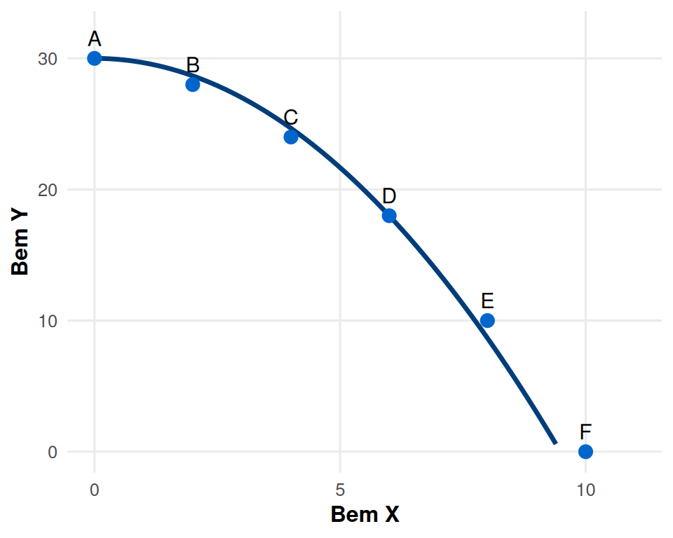
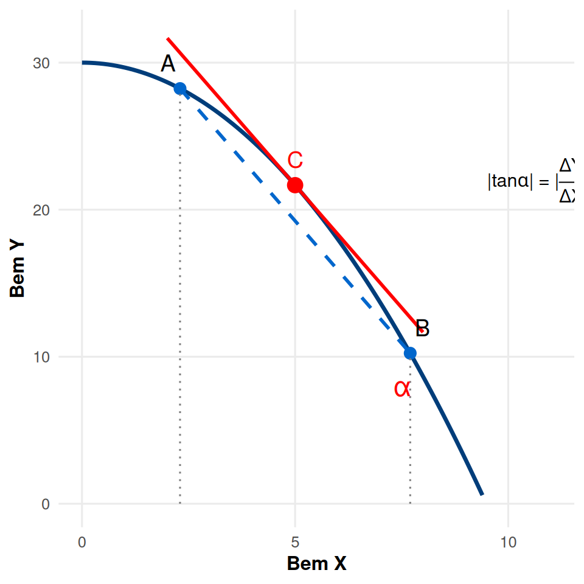
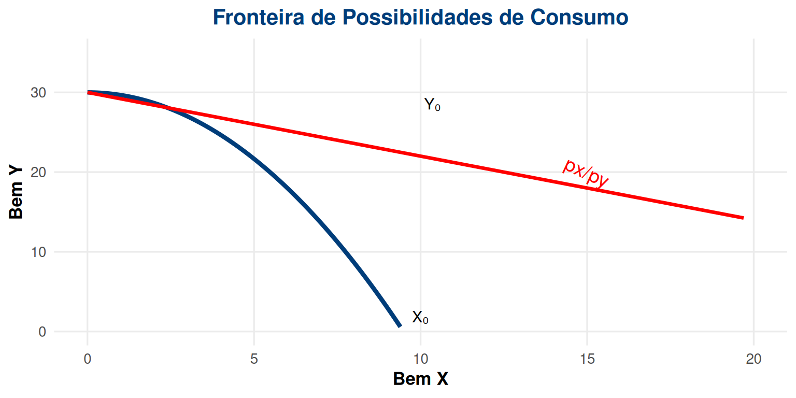
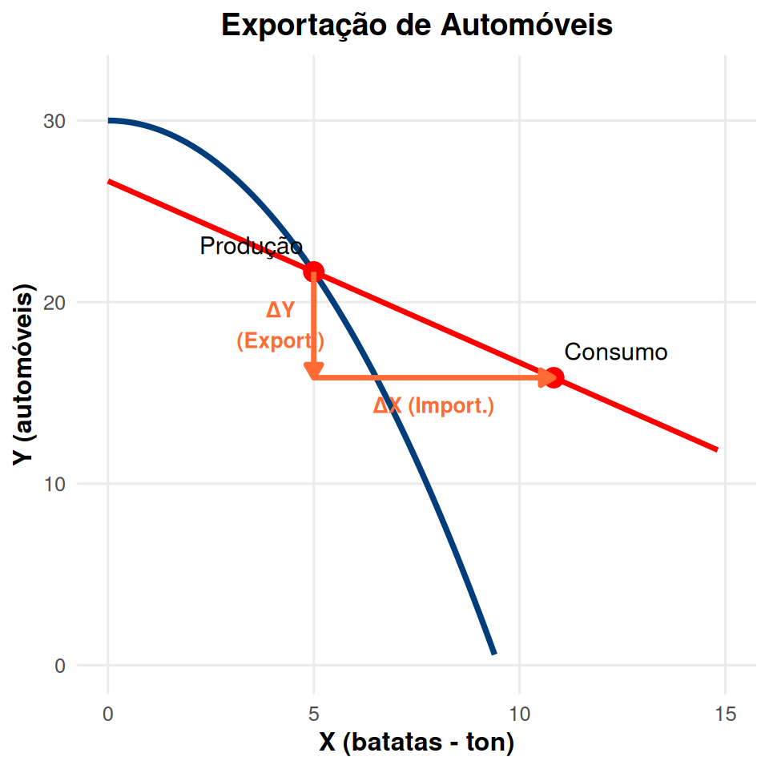
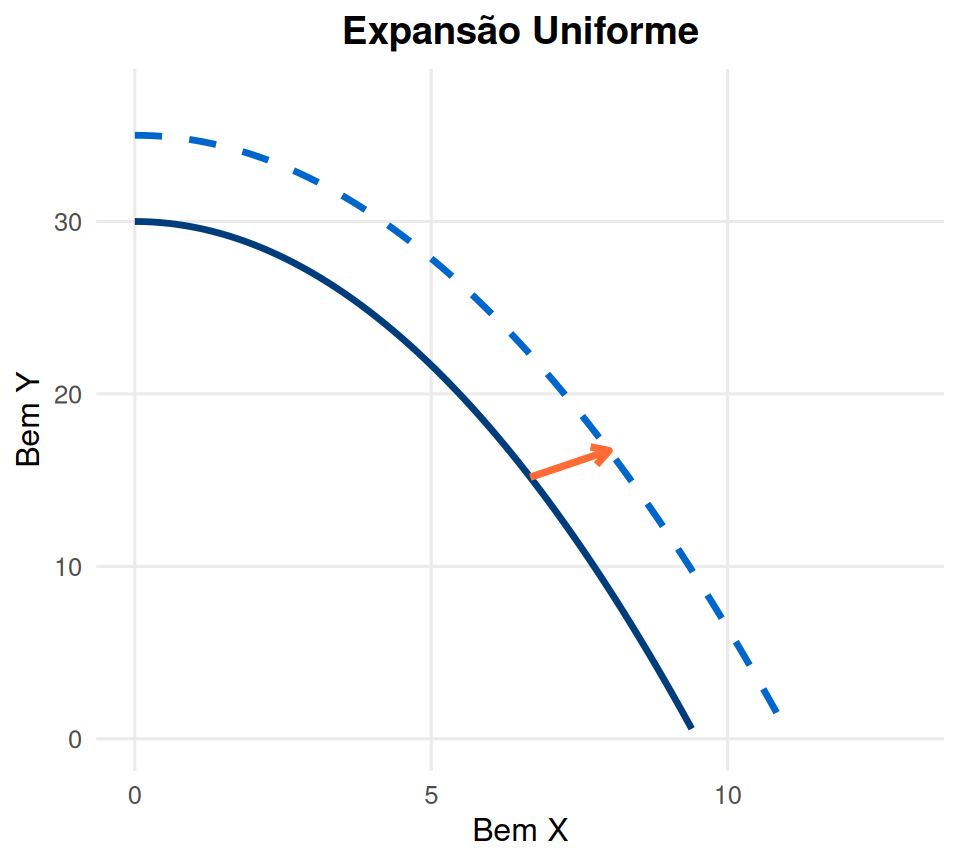
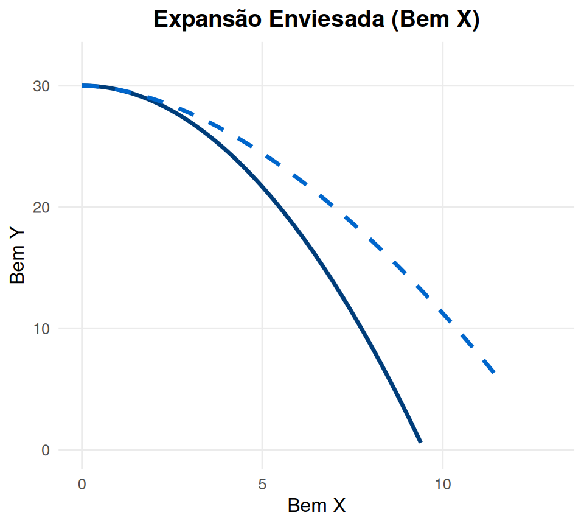

Microeconomia
Aula 5: Cabaz, Espaço e Restrição Orçamental
ISCAL - Instituto Superior de Contabilidade e Administração de Lisboa
Objetivos da Aula 🎯
Nesta aula iremos estudar:
- O conceito de cabaz de consumo e espaço de consumo
- A restrição orçamental do consumidor
- O efeito das alterações de preços e rendimento
- Comparação com a Fronteira de Possibilidades de Produção
- Vantagens do comércio internacional
Recordando: Fronteira de Possibilidades de Produção 📊
| Possibilidades | Bem X | Bem Y |
|---|---|---|
| A | 0 | 30 |
| B | 2 | 28 |
| C | 4 | 24 |
| D | 6 | 18 |
| E | 8 | 10 |
| F | 10 | 0 |
A FPP mostra as combinações máximas de bens que podem ser produzidos com os recursos disponíveis.
Custo Relativo e Custo de Oportunidade 💰
Taxa Marginal de Transformação:
\[TMT_{Y,X} = -\frac{\Delta Y}{\Delta X}\]
| Possibilidade | Bem X | Bem Y | \(TMT_{Y,X}\) |
|---|---|---|---|
| A | 0 | 30 | — |
| B | 2 | 28 | 1 |
| C | 4 | 24 | 2 |
| D | 6 | 18 | 3 |
| E | 8 | 10 | 4 |
| F | 10 | 0 | 5 |

O custo relativo é crescente: cada unidade adicional de X requer sacrificar cada vez mais unidades de Y! 📈
Custo Relativo como Derivada da FPP 📐

\(\frac{\Delta Y}{\Delta X}\) é a taxa de variação média: qual a variação em Y por unidade de variação em X
\(\left|\frac{\Delta Y}{\Delta X}\right|\) é o custo relativo de uma unidade adicional de X
\(\left|\frac{\Delta Y}{\Delta X}\right|\) é o custo de oportunidade de uma unidade adicional de X
\(\frac{dY}{dX}\) é o declive da reta tangente no ponto C — é a derivada da FPP nesse ponto
Vantagens do Comércio Internacional 🌍
Admitamos que podemos aceder a um mercado internacional onde podemos transacionar bens aos preços de mercado.
- A nossa FPP não muda (capacidade produtiva mantém-se)
- Mas surgem novas possibilidades de consumo!
- Termos de troca: \(\frac{p_x}{p_y}\) (quantas unidades de Y por cada unidade de X)

Vantagens do Comércio: Exemplo Numérico 📊

Dados do mercado:
- 1 automóvel vende-se por €8.000 (\(p_y\))
- 1 ton de batatas vende-se por €1.000 (\(p_x\))
- Termos de troca: 1 automóvel = 8 ton de batatas
\[\frac{p_x}{p_y} = \frac{1.000}{8.000} = \frac{1}{8}\]
Fronteira de consumo tem declive \(\frac{1}{8}\) a partir do ponto de produção
Condição de equilíbrio: \[\Delta Y \cdot p_y + \Delta X \cdot p_x = 0\]
Importação vs Exportação 🔄
Exportação de Y (automóveis):

ΔY: Exportação
ΔX: Importação
Importação de Y:

ΔY: Importação
ΔX: Exportação
Regra Geral:
Em \(E_2\) verifica-se que \(\Delta Y \cdot p_y + \Delta X \cdot p_x = 0\)
Logo: \(\left|\frac{\Delta Y}{\Delta X}\right| = \frac{p_x}{p_y}\)
Crescimento Económico 📈
O crescimento económico desloca a FPP para fora:
Crescimento Proporcional:

Crescimento Enviesado:

- Proporcional: Aumento de recursos ou tecnologia afeta ambos os bens igualmente
- Enviesado: Melhoria mais acentuada na produção de um dos bens
Exercícios de Aplicação 📝
Exercício 1 (Escolha Múltipla)
Uma economia tem uma FPP dada por \(Y = 100 - 2X^2\). Se esta economia produz atualmente 10 unidades de X, qual é o custo de oportunidade de produzir mais uma unidade de X?
- 20 unidades de Y
- 40 unidades de Y ✓
- 10 unidades de Y
- 80 unidades de Y
Solução: \(TMT = -\frac{dY}{dX} = -(-4X) = 4X\). Para \(X=10\): \(TMT = 4 \times 10 = 40\)
Exercícios de Aplicação 📝
Exercício 2 (Escolha Múltipla)
Considere uma economia que exporta vinho e importa trigo. Se o preço internacional do vinho aumentar relativamente ao preço do trigo, o que acontece?
- A FPP desloca-se para dentro
- A fronteira de possibilidades de consumo torna-se mais inclinada
- A fronteira de possibilidades de consumo torna-se menos inclinada ✓
- Nada acontece à fronteira de possibilidades de consumo
Solução: Se \(p_{vinho}\) aumenta, então \(\frac{p_{trigo}}{p_{vinho}}\) diminui. O declive da FPC é \(-\frac{p_{trigo}}{p_{vinho}}\), logo torna-se menos inclinado (em valor absoluto).
Exercícios de Aplicação 📝
Exercício 3 (Desenvolvimento)
Uma pequena economia produz apenas café e açúcar. A sua FPP é dada por \(A = 200 - 2C^2\), onde A é açúcar (toneladas) e C é café (toneladas).
Se esta economia não comercializar internacionalmente e produzir 5 toneladas de café, quantas toneladas de açúcar pode produzir?
Suponha que no mercado internacional 1 ton de café troca-se por 15 ton de açúcar. Se a economia produzir 5 ton de café, qual o máximo de açúcar que pode consumir com comércio internacional?
Quantas toneladas de café exporta ou importa? Quantas de açúcar?
Soluções:
a) \(A = 200 - 2(5)^2 = 200 - 50 = 150\) ton
b) Produz 150 ton açúcar + exporta 5 ton café = 150 + 5×15 = 225 ton açúcar
c) Exporta 5 ton café, importa 75 ton açúcar (225-150=75)
Resumo da Aula 📚
Fronteira de Possibilidades de Produção mostra as combinações máximas de bens que podem ser produzidos
Custo de Oportunidade (\(TMT\)) é crescente devido aos rendimentos decrescentes — medido pelo declive da FPP
Comércio Internacional permite consumir além da FPP doméstica
Os termos de troca (\(\frac{p_x}{p_y}\)) determinam o declive da Fronteira de Possibilidades de Consumo
Crescimento económico desloca a FPP para fora, podendo ser proporcional ou enviesado
Condição de equilíbrio no comércio: \(\Delta Y \cdot p_y + \Delta X \cdot p_x = 0\)
Próxima aula: Preferências do consumidor, axiomas de racionalidade e curvas de indiferença! 🎯

Microeconomia (Plano de Transição)